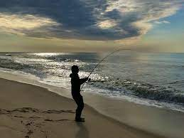
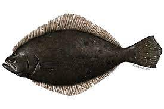

Log Blog
This will be a surfcasting log for the good, and bad days of fishing the beaches of Long Beach, located on the south shore of Long Island, NY. With Stripe Bass season kicking off, we will mainly be targeting that species of fish. Come and enjoy some stories as well as a detailed log including the time, weather, tides, bait and lures used, and any successful days we may have had.
The Set Up
Between four friends we set up shop with about 7 rods across 50 yards of beach. Four rods (9-10 ft.) are typically spiked into the sand while casted out with baited lines and sinkers. Our recent choice of bait has been clam bellies on high/low leaders with 3-5 oz sinkers, aiming for a 20-35 yard cast depending where the trough is. The remaining 3 rods (8-9 ft.) will be used with lures and jigs. Depending on the tides, we walk out waist deep with waders and throw about 1-2 dozen casts before checking the other rods.

Our beaches have newly reconstructed jetties for added protection from the deposition of sand caused from the consistent westward currents.
Species
- Stripe Bass
- Bluefish
- Fluke 